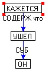
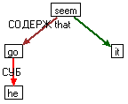
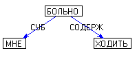
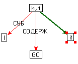
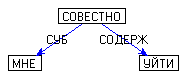
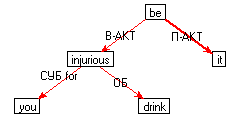
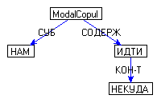
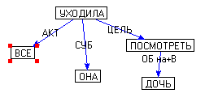
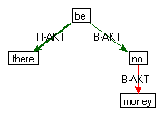

|
главная о нас продукты скачать демо технологии ^
0. Вводные замечания
1. Алгоритм AL_it
2. Алгоритмы AL_compl_obj_to и AL_compl_obj
3. Алгоритм AL1
4. ApplyBeRule
5. ApplyTwoNegationsRule (двойное отрицание)
6. ApplyModalVerbTenseRule
7. ApplyPredicativeRule
8. ApplyModalCopulRule
9. ApplyKeepRule
10. ApplyNoRule
Все алгоритмы принадлежат к этапу трансфера.
Алгоритмы делятся на две группы. Для
работы алгоритмов первой группы требуется заполненное поле АЛГОРИТМ в статье
АОССа, а алгоритмы второй группы, которые иначе называются правилами (Rule), требуют
лишь определенной комбинации других полей.
Условные обозначения:
>> контактное (непосредственное)
следование,
> следование. необязательно
контактное,
<< контактное предшествование,
< предшествование, не обязательно
контактное,
-> связь между узлами
Данный алгоритм определен на
английских словах, у которых есть помета АЛГОРИТМ = AL_it. (Предполагается, что это все глаголы, с ГХ=VERB). Сначала проверяется, стоит ли
английский глагол в личной форме, и если нет, алгоритм завершает работу. Если
глагол стоит в личной форме, то программа проверяет, есть ли у глагола
подлежащее; если подлежащего нет, то
доставляется в качестве подлежащего местоимение it и создается связь ГЛАГОЛ ->
it, помеченная IsSubj.
Порядок слов: it >> ГЛАГОЛ.
Число глагола: ставится единственное число.
Примеры:
Кажется, что он ушел.
Мне больно ходить.
| Семантика |
Трансфер |
|  |
 |
|  |
 |
| 2. Алгоритмы AL_compl_obj_to и AL_compl_obj |
^ |
(бывшие AL6 и AL5)
Данные алгоритмы определены на
английских словах, у которых есть помета АЛГОРИТМ = AL_compl_obj_to или АЛГОРИТМ = AL_compl_obj. Примеры:
ask, cause, expect, prefer 2, prove, require, want, wish.
Алгоритм применяется при наличии выходящей из главного
глагола связи "ЦЕЛЬ"|"СОДЕРЖ" к глаголу, от которого есть
выходящая связь к субъекту (СУБ).
Глагол переводится в инфинитив и переносится (вместе со
своим поддеревом) в ту же клаузу, что и узел алгоритма.
Далее рассматриваются все глаголы, связанные с
обрабатываемым союзом И. Они все также переводятся в инфинитив и переносятся в
ту же клаузу, пока в цепочке не встретится либо глагол с СХ = МОДЛ, либо
глагол с частицей НЕ.
В случае AL_compl_obj_to связь "главный
глагол – подчиненный глагол" помечается частицей "to", в случае AL_compl_obj
– ничем не помечаются.
Субъект глагола перевешивается на глагол, породивший
алгоритм:
глагол>>субъект.
Примеры:
Мы хотим, чтобы она ответила на все вопросы – We want her to answer all the
questions.
Мы видели, что она бежит – We saw her run.
(see l:\durnovo\залог.doc)
Этот алгоритм преобразует статью переходного глагола в его
непереходную пару.
Этот
алгоритм применим к глаголу be 4, который имеет значение "находиться где-либо; существовать". После того как Трансфер
заменил "быть 2" на "be
4", программа ставит в вершину клаузы глагол be, от него стрелку П-АКТ
ведет к слову there,
стрелку В-АКТ ведет к слову, занимавшему позицию В-АКТ глагола быть 2 в русском графе.
На синтезе устанавливается порядок слов: there >> BE > TR(В-АКТ).
| 5. ApplyTwoNegationsRule (двойное отрицание) |
^ |
Пусть дан узел X, которому был приписан оператор
отношения "не". Пусть M
– множество узлов, зависящих от Х (существует путь из Х в эти узлы), и каждому
СÎМ
в АОССе приписано ГХ = * : Neg (nobody, never, no one и т.д).
Если множество М пусто,
выходим из процедуры. В противном случае делаем следующее. Стираем у X оператор "не". Все узлы СÎМ, кроме самого первого С по линейному порядку
русской фразы, превращаем в их
отрицания. Отрицания берутся из поля ЛФ (лексическая функция Anti). Например, Anti
(nobody) = anybody,
Anti (nothing) =anything.
Ниже приведены иллюстрации работы этого правила:
не жить => not to live (множество
М - пусто)
никто не живет => nobody lives (самый
первый *:Neg не нужно конвертировать)
никто ничего не хочет => nobody wants anything
я не хочу не жить => I don"t want not to live.
В случае, если в числе узлов в М имеется имя
существительное, его отрицание получается простым убиранием частицы "ни" и
приписыванем артикля "a" (если слово вообще может
употребляться с артиклем).
| 6. ApplyModalVerbTenseRule |
^ |
Этот алгоритм работает после функции согласования времен в
сложном английском предложении. Делает он следующее. Пусть Х - глагольный узел c леммой "can"("must"). Если Х стоит не в настоящем
времени (present_smp_tn, present_cnt_tn, present_prf_tn, present_prf_cnt_tn), тогда нужно конвертировать этот глагол в "be able to" (have to). Еще нужно преобразовать
валентную структуру, поскольку can(must) подчиняет инфинитив без
to, а "be able to" (have to) с to.
| 7. ApplyPredicativeRule |
^ |
Данный алгоритм определен на тех
английских узлах, которые произошли от русских узлов c характеристикой ПРЕДК:ГГ, кроме
следующих случаев:
-
Узел имеет характеристику VERB_MODL
-
Узел имеет лемму can (мне видно реку)
-
Узел имеет лемму have (мне нужно идти)
-
Узел имеет "АЛГОРИТМ = AL_it" (мне больно ходить) – см. выше
Производится добавление узла "be 1",
и устанавливается порядок слов: be > предикатив.
Время берется от узла предикатива. Входящие и
выходящие межклаузные связи перевешиваются на новый узел be
1. Есть связь с субъектом (СУБ и все, что ниже по иерархии)
и узел имеет "ОГРН=subj!"
или "ОГРН=predic!", то связь с субъектом перевешивается
на новый узел be
и помечается IsSubj, а
число глагола берется от узла субъекта с учетом возможности МНА
| семантика |
трансфер |
|  |
 |
 |
 |
2. Иначе
Производится добавление узла "it 1"
в позицию подлежащего. Создается связь be -> it,
стрелка помечается "П-АКТ", связь помечается IsSubj.
Порядок слов: it>>be.Число
глагола: ставится единственное число
Если есть связь с субъектом, то эта связь оформляется
предлогом for, и
устанавливается порядок слов TR(глагол)
> субъект.
Данный алгоритм определен на
словах c ПРЕДК:ОТР, по
которым семантика строит ModalCopul.
В английской статье для таких слов имеется ГХ= * : Neg.
Вначале ищется связь "СОДЕРЖ" от ModalCopul к глаголу. Если
такой связи нет, то сделать ничего нельзя, и узел ModalCopul просто удаляется (e.g. "некуда", "мне некуда"). Далее
программа определяет, заполнена ли валентность СУБ в русском графе.
Если
валентность СУБ в русском графе заполнена, то производится замена узла ModalCopul на узел "have 1".
Устанавливается порядок слов have
> TR(глагол). Число
глагола берется от узла субъекта с учетом возможности МНА.
|  |
 |
Если нет связи с субъектом, то
производится добавление узлов "be 1" и "there 1". Устанавливается порядок
слов there
>> be > TR(глагол). Глагол ставится
в единственное число.
Далее: связь "have/be ->
глагол" помечается "В-АКТ", и устанавливается порядок слов have/be >> TR(глагол). На связи "глагол ->
слово, породившее ModalCopul"
устанавливается порядок: TR(глагол)
> TR(это слово).
Время глагола берется от узла, породившего ModalCopul
Примечание: этот алгоритм
появился вместо убитого AL_neg.
Этот правило определено только на
слове __vse - это слово введено в АОСС в качестве
технического решения следующей ситуации: в русском языке есть наречие "все", которое, предваряя глаголы определенного
класса, образует с ними конструкцию, обозначающую многократное повторение
действия. В английском языке такую конструкцию можно переводить конструкцией "keep+gerund(VERB)".
Если управляющий глагол имеет
частицу НЕ, то правило не применяется, а узел __vse заменяется
на узел still, предшествующий
глаголу (still>>глагол).
|  |
 |
Узел "все" (__vse) заменяется на узел "keep 1".
Связь ГЛАГОЛ -> "все": keep>>глагол (узел глагола переводится в герундий).
Далее рассматриваются все глаголы, связанные с обрабатываемым
союзом И. Они все также переводятся в герундий, пока в цепочке не встретится
либо глагол с СХ = МОДЛ, либо глагол с частицей НЕ.
Время: берется от узла глагола.
Число: берется от узла субъекта с учетом возможности
МНА
Входящие связи: перевешиваются на новый узел keep.
Правило применяется к слову "no1", если среди выходящих из него
связей есть СУБ|П-АКТ и/или ОБ|В-АКТ.
1. если есть связь с субъектом ("СУБ" |
"П-АКТ"), то производится добавление узла "have 1"
| семантика |
трансфер |
 |
 |
Порядок слов: "Subj" -> have -> no
Число: берется от узла субъекта с учетом возможности
МНА
Время: берется от узла "нет"
Связь с субъектом: перевешивается на новый узел have, помечается IsSubj и все предлоги
стираются, создается связь have
-> no c
описанием "В-АКТ" (have>>no).
Входящие связи: перевешиваются на новый узел have
Выходящие межклаузные связи: перевешиваются на новый
узел have
2. если нет связи с субъектом, то производится добавление узла
"be 1" и узла "there 1"
|
семантика |
трансфер |

|
 |
Число: берется от узла объекта с учетом возможности
МНА (в случае МНА число ставится множественное). При наличии у объекта "ОГРН =
ед !" ставится единственное число
Время: берется от узла "нет"
Создается связь be -> there c
описанием "П-АКТ" (there>>be), помеченная IsSubj.
Создается связь be -> no c
описанием "В-АКТ" (be>>no).
Входящие связи: перевешиваются на новый узел be
Выходящие межклаузные связи: перевешиваются на новый
узел be
Дополнительная обработка:
Если среди выходящих связей (с учетом МНА) имеется слово с
отрицанием (ГХ = *:Neg),
то узел no
удаляется.
главная о нас продукты скачать демо технологии ^ |